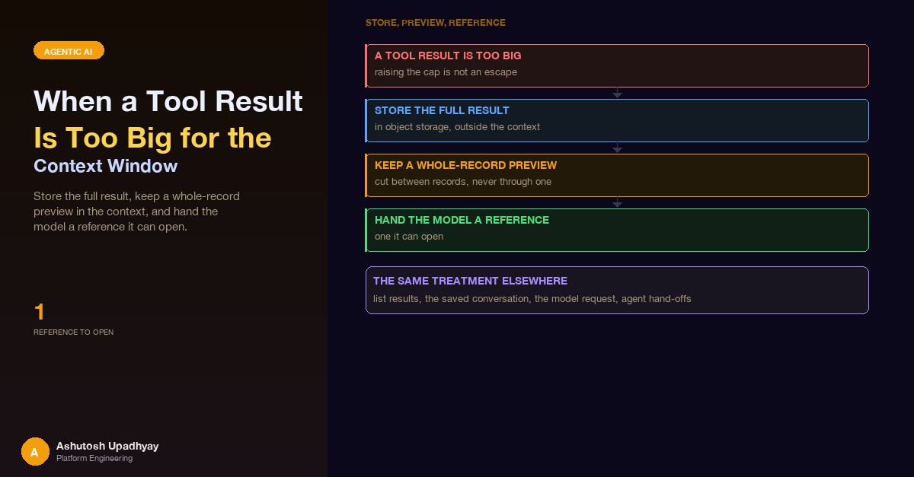

Store the full result, keep a whole-record preview in the context, and hand the model a reference it can open. How that works for list results, for the saved conversation, for the model request and across agent hand-offs.
Post #25 showed the conversation manager trimming oversized tool results, so that one long run would not drag every earlier result into every later model call. That was the right protection for the window. It also left a question I had been avoiding: what does the user get when they ask for more data than a window can hold?
The request that forced the question was an ordinary one. A user wanted a list-style tool to return up to a thousand rows, and every row when asked. A thousand structured records is far more than belongs in a prompt. Whatever the cap decided, the model would be answering from part of the data while the user believed it was answering from all of it. And the number it would report was the worse problem: a count taken from the rows that fit is the size of the preview, not the size of the result. It is the same family of error as the counter that measured writes instead of entities in post #26.
So the design question changed. It stopped being "how big should the cap be" and became "where does the full result live, and what does the model hold instead?" The answer I settled on is to pass big results by reference.
The pattern in one sentence. The full result goes to a per-user object in storage. The context gets a contiguous preview made of whole records, a true total from the source, flags that say exactly what was and was not shown, and a reference the model can open when it needs every row. The user gets a link.
This post walks through that pattern in four places: list results, the saved conversation, the model request itself, and the hand-off between agents. It ends with a sidebar about a list read that quietly hid chats, because it is the same size problem arriving from the other direction.
The tempting answer to "the cap is too small" is a bigger cap. It fails for reasons that have nothing to do with the model call.
A bigger number feels like a fix. Raising the limit moves the failure from the model call to the session write, and it leaves the re-billing untouched. The decision that matters is not the size of the cap but whether the full result still exists somewhere the user and the model can reach.
Every tool that can return a list uses one shared writer. Rows are streamed from the query (on a server-side cursor when the source is a database) into a spooled temporary file as CSV. While the rows go by, the writer also builds the inline preview. When the rows run out there is one upload, and the tool returns a payload with four kinds of information:
| Part | What it carries | Why it exists |
|---|---|---|
| Contiguous inline prefix | The first rows, in query order, until the first row that does not fit the budget | The model can read and quote real records, and "the first rows of the result" is a true description of what it holds |
| True total | The database's own count of matching rows, taken before the row limit | Counts come from the source, never from what happened to fit |
| Flags | One for "the CSV is short of the total", one for "the inline part is short of the CSV" | The model can say precisely what the user is looking at |
| Link and export id | Placed first in the payload | It must survive being copied between agents (see below) |
A result then looks like this, with N the number of matches and k the number of rows that fit inline:
{
"download_url": "<link to the per-user CSV>",
"total_matching": N,
"rows_exported": N,
"rows_inline": k,
"truncated": false,
"inline_truncated": true,
"data": [ ...the first k rows... ]
}The total is a window function, evaluated over the full match before LIMIT is applied. Every row carries it; the writer reads it off the first row and strips it from the output.
SELECT id, score, status,
COUNT(*) OVER () AS _total -- over the whole match, before LIMIT
FROM results
WHERE ...
ORDER BY ...
LIMIT :n;The agent is also told, in the tool description and in the instructions for the agent that writes the answer, to report counts from the total and never from the number of inline rows. A rule in the prompt is not enough on its own, but it is cheap, and it matches what the payload makes easy.
The inline prefix stops at the first row that does not fit. It does not skip that row and keep packing smaller ones behind it.
def inline_prefix(rows, budget, serialize=json.dumps):
kept, used = [], 0
for row in rows:
size = len(serialize(row)) + 2 # the ", " between list items
if used + size > budget:
break # first misfit ends the prefix
kept.append(row)
used += size
return keptPacking is tempting because it shows more rows. It also means the model sees rows 1 to 30, then 33 and 34, and happily describes a contiguous run it never had. Two details keep the budget honest: the size is measured with the same serialiser used for the final payload, so the budget is counted in the bytes the model will actually receive, and the preview is a prefix of the query order, so "the first rows" stays true.
The CSV holds up to the row limit the caller asked for, so the first flag says whether the file itself is short of the total, for example because the request asked for fewer rows than matched. The second says whether the inline preview is short of the file. With both, the model can say "these are the first few dozen rows; the download holds the rows you asked for, out of a larger total" instead of guessing which of the three numbers it is looking at.
Once a result becomes a file that people click on, the questions change from "is it too big" to "who may fetch it, and what happens when they open it".
def formula_guard(cell: str) -> str:
# =, +, -, @, TAB and CR start a formula in most spreadsheet apps
if cell and cell[0] in "=+-@\t\r":
return "'" + cell
return cellA reference is not a capability. Holding an export id grants nothing by itself. Every request re-derives the owner from the session, looks under that owner's prefix only, and re-checks the producing tool against the caller's current access. The same rule applies when the model, not a person, is the one presenting the reference.
List tools are the easy case because they know they are producing rows. A schema dump, a search result or a status listing can be just as large, and nobody writing those tools thought about it. So the same idea is applied generically, by a hook that runs after every data tool call:
When the turn is saved, the stored copy of a large result is the preview plus a marker block:
[full result stored: ref <id>, <bytes> bytes,
available until <date>; open it with the analysis tool]Two properties make the marker safe to rely on. It is written only for a copy that is confirmed in storage: persistence waits, off the event loop and for a bounded time, for the upload behind each result, and a pointer to nothing is worse than no pointer. And it carries a date, derived from the retention setting, so a marker is trusted only while that date has not passed.
A preview that ends in the middle of a record is another way to hand the model broken data. For JSON results the preview is cut at the last complete element of the shallowest open array that holds a comma, which is normally the list of rows. The open brackets are then closed, so the result parses and consists of whole records.
TOKEN = re.compile(r'"[^"\\]*(?:\\.[^"\\]*)*"|"|[\[\]{},]')
def cut_at_record_boundary(head: str):
stack = [] # [closer, position of the last comma at this level]
for m in TOKEN.finditer(head):
tok = m.group()
if tok == '"': # unterminated string: stop here
break
if tok in "{[":
stack.append(["}" if tok == "{" else "]", None])
elif tok in "}]":
if stack:
stack.pop()
elif tok == "," and stack:
stack[-1][1] = m.start()
# prefer the shallowest open array holding a comma: the cut falls between rows
pick = next((i for i, (c, p) in enumerate(stack) if c == "]" and p is not None), None)
if pick is None:
pick = next((i for i, (c, p) in enumerate(stack) if p is not None), None)
if pick is None:
return None
return head[: stack[pick][1]] + "".join(c for c, _ in reversed(stack[: pick + 1]))When the model needs every row, it passes the reference to an analysis tool that runs a script in a sandbox against the stored copy, so it analyses or charts the exact data instead of retyping a preview. The reference carries the session segment, so the lookup goes straight to one object. It is parsed with a strict pattern, resolved under the caller's own prefix only, and the producing tool is re-checked against the caller's current access before the sandbox is allowed to read it. A string supplied by a model is input like any other.
In mid-October a single status-listing tool returned about 14.7 MB. The request carrying it was rejected as too long: roughly 8 million tokens against a 1-million-token window. Nothing sat between that tool result and the model call. The cap from post #25 runs after the loop, and the delegate agents run without a trimming conversation manager, so there was no bound to hit.
The guard that followed uses the same by-reference idea, as a wrapper around the model-invocation step:
Three details are worth copying.
The estimate is deliberately pessimistic. It divides bytes by a bytes-per-token ratio of 1.84, which is what the incident measured for JSON-heavy output (that 14.7 MB came to about 7.97 million tokens). Prose is closer to 4 bytes per token. Using the low JSON ratio over-counts prose, so the guard may act a little early and never late.
The replacement text is stable. Each offloaded result's replacement is computed once per run and cached, the set of offloaded results only grows, and the replacement is byte-identical on every later model call. That keeps the prefix the provider caches stable, which matters because a guard that rewrites history differently on each call would turn every call into a cache miss. Largest-first, with the tool-use id as tie-break, keeps the choice deterministic.
It works on a copy. The middleware receives a deep copy of the messages. The live message list, and everything built from it (charts and tables in the UI, the grounding check, knowledge-graph harvesting), still sees the full result.
A big result rarely reaches the user from the agent that fetched it. In a multi-agent flow a delegate fetches, another agent analyses, and a final agent writes the answer. Each hand-off is a place for the link, the total or the flags to be paraphrased away. Four things keep them intact:
The same size problem showed up on the read side. A user reported that chats were "not saved after a certain date". The writes were fine. The sidebar was showing 40% of one heavy user's chats.
The cause was the page size of the list call. A DynamoDB Query or Scan returns at most 1 MB per page, and that limit is measured on the items read before ProjectionExpression is applied. Projecting only the sort key does not shrink the page. Chat items can be large, so one page covered only a handful of them, and the code never looked at LastEvaluatedKey. Because the sort key was a random identifier, the hidden chats were scattered alphabetically, which looked like a gap in dates.
items, kwargs = [], {"KeyConditionExpression": "pk = :pk", ...}
while True:
page = table.query(**kwargs)
items.extend(page["Items"])
if "LastEvaluatedKey" not in page:
break
kwargs["ExclusiveStartKey"] = page["LastEvaluatedKey"]
# filter hidden and expired chats AFTER every page has been readTwo lessons came out of it. When users say records are missing, compare a paginated count against what the endpoint returns before touching the write path. And filter after you have read every page: a FilterExpression is applied per page after the read, so a short or even empty page does not mean you are done; keep following LastEvaluatedKey either way. Filtering client-side after the last page keeps the loop simple.
| Place | The limit | What by-reference does there |
|---|---|---|
| Model context | The window, plus re-billing on every call | Prefix plus marker in context; full copy opened on demand |
| Session store | 400 KB per DynamoDB item | Saved turn holds a preview and a marker, not the result |
| Agent-to-agent hand-off | Whatever the next stage will accept | Link and total first, reference split off the body |
| List reads | 1 MB per Query/Scan page | Follow LastEvaluatedKey; filter after the last page |
| Spreadsheet on the user's desk | Cells that look like formulas | Quote-prefix string cells |
Today the model sees a preview and a total. The next step is a short, code-computed profile of the full result stored beside the preview: column names and types, minimum and maximum for numeric columns, distinct counts for categorical ones, and null rates. It would be accumulated in the same pass that writes the CSV, so it costs one extra accumulator per column and no second read. With it the model would know the shape of the part it cannot see, whether the first rows are typical or the tail looks different, without opening the file. It also keeps the rule from post #34: code owns every number, and the model writes the words around them.
COUNT(*) OVER () or its equivalent, and add flags that say what each number covers.Disclaimer: The views and opinions expressed in this post are my own and do not represent those of my employer or any organisation I am associated with.